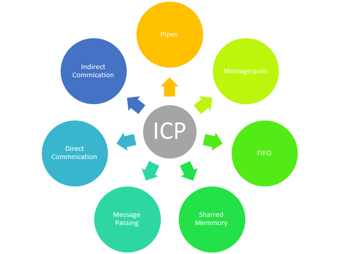

In computer science, inter-process communication (IPC), also spelled interprocess communication, are the mechanisms provided by an operating system for processes to manage shared data. Typically, applications can use IPC, categorized as clients and servers, where the client requests data and the server responds to client requests. Many applications are both clients and servers, as commonly seen in distributed computing.
IPC is very important to the design process for microkernels and nanokernels, which reduce the number of functionalities provided by the kernel. Those functionalities are then obtained by communicating with servers via IPC, leading to a large increase in communication when compared to a regular monolithic kernel. IPC interfaces generally encompass variable analytic framework structures. These processes ensure compatibility between the multi-vector protocols upon which IPC models rely.
An IPC mechanism is either synchronous or asynchronous. Synchronization primitives may be used to have synchronous behavior with an asynchronous IPC mechanism.
Different approaches to IPC have been tailored to different software requirements, such as performance, modularity, and system circumstances such as network bandwidth and latency.[1]
| Method | Short description | Provided by (operating systems or other environments) |
|---|---|---|
| File | A record stored on disk, or a record synthesized on demand by a file server, which can be accessed by multiple processes. | Most Operating Systems |
| Communications File | A unique form of IPC in the late-1960s that most closely resembles Plan 9's 9P protocol | Dartmouth Time-Sharing System |
| Signal; also Asynchronous System Trap | A system message sent from one process to another, not usually used to transfer data but instead used to remotely command the partnered process. | Most Operating Systems |
| Socket | Data sent over a network interface, either to a different process on the same computer or to another computer on the network. Stream-oriented (TCP; data written through a socket requires formatting to preserve message boundaries) or more rarely message-oriented (UDP, SCTP). | Most Operating Systems |
| Unix Domain Socket | Similar to an internet socket, but all communication occurs within the kernel. Domain sockets use the file system as their address space. Processes reference a domain socket as an inode, and multiple processes can communicate with one socket | All POSIX operating systems and Windows 10[3] |
| Message queue | A data stream similar to a socket, but which usually preserves message boundaries. Typically implemented by the operating system, they allow multiple processes to read and write to the message queue without being directly connected to each other. | Most Operating Systems |
| Anonymous Pipe | A unidirectional data channel using standard input and output. Data written to the write-end of the pipe is buffered by the operating system until it is read from the read-end of the pipe. Two-way communication between processes can be achieved by using two pipes in opposite "directions". | All POSIX systems, Windows |
| Named Pipe | A pipe that is treated like a file. Instead of using standard input and output as with an anonymous pipe, processes write to and read from a named pipe, as if it were a regular file. | All POSIX systems, Windows, AmigaOS 2.0+ |
| Shared memory | Multiple processes are given access to the same block of memory, which creates a shared buffer for the processes to communicate with each other. | All POSIX systems, Windows |
| Message Passing | Allows multiple programs to communicate using message queues and/or non-OS managed channels. Commonly used in concurrency models. | Used in LPC, RPC, RMI, and MPI paradigms, Java RMI, CORBA, COM, DDS, MSMQ, MailSlots, QNX, others |
| Memory-Mapped File | A file mapped to RAM and can be modified by changing memory addresses directly instead of outputting to a stream. This shares the same benefits as a standard file. | All POSIX systems, Windows |
The following are messaging, and information systems that utilize IPC mechanisms but don't implement IPC themselves:
The following are platform or programming language specific-APIs that use IPC:
Go to DBPedia Go To IBM Go to Stack Overflow